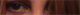

About me

I am "Juri Han Padaria". I'm a student of Computer Network. I've always loved to use the computer since I was a kid and liked it even more when I started to mess up with the configuration files of the games to make them run on my low spec machine. Later, when I was finishing my High School, I had to decide what career I would choose for my life and I chose the path of "Learn to Code" but, honestly, coding is not part of my "tools that I'm really good to use", it is something that got my attention and I decided to try how to do things by beginning with the Python language. Also, I am a huge fan of Origami, it's something that requires a lot of patience and effort to make something right but once you make it, the result looks AWESOME!
Except for those times which you miss a step and you have to go all way back to the beginning :p
Languages are also fun and, for now, English is my second language. My objective is to speak at least four languages, for now I'm learning Spanish but, I have to say, it's cool and boring at the same time. I will not abandon it, I'm willing to dominate this language and hopefully I'll be able to speak casually with any Spanish speaker in the world. What may be my next step? German? Japanese? I'm not sure at the moment, but my choices are these. Both are beautiful languages.
Where could you find me?
You can find me in some places across the internet, feel free to visit my profiles!
My Projects
I have some cool ideas in mind which its topics may vary from DnD to some IT stuff. For now, it is all under development. When I finish a project, I'll make sure to update this section and it will allow you guys to take a look at some of my works!
Waifu List
This is a list about the most beautiful women in animes/games.
To access it, just click right here!
Add your Waifu here! Contact us to submit a character for inclusion in the list.
Thanks for visiting!
